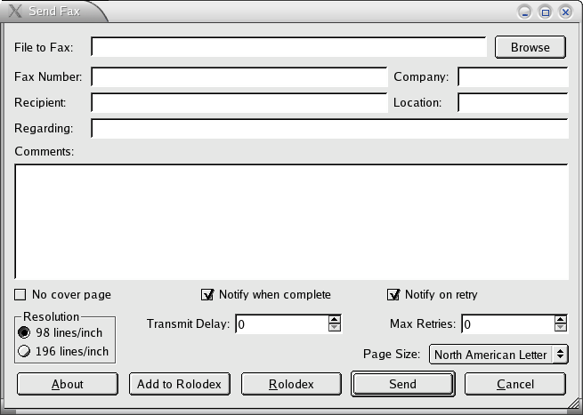
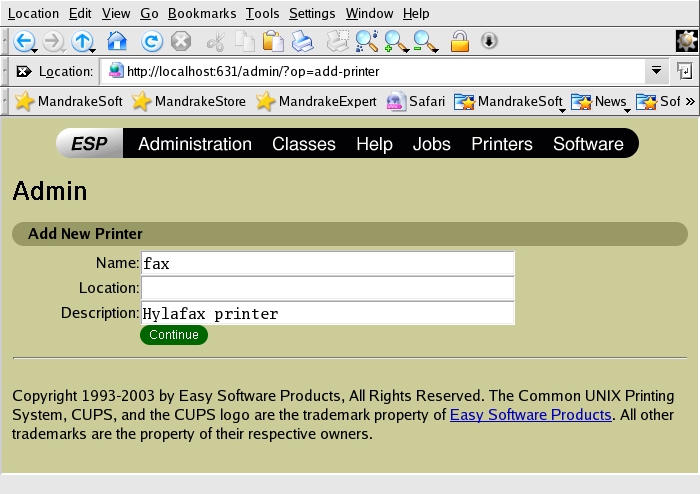
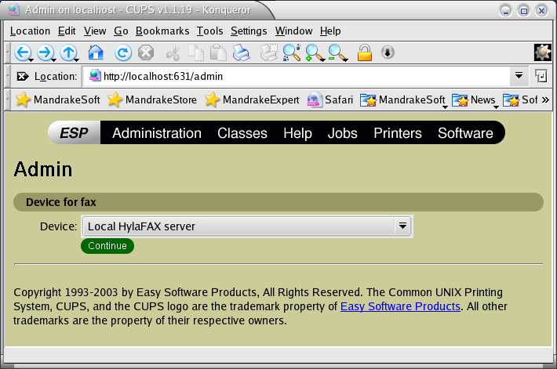
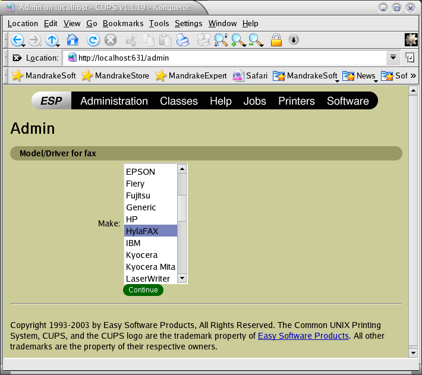
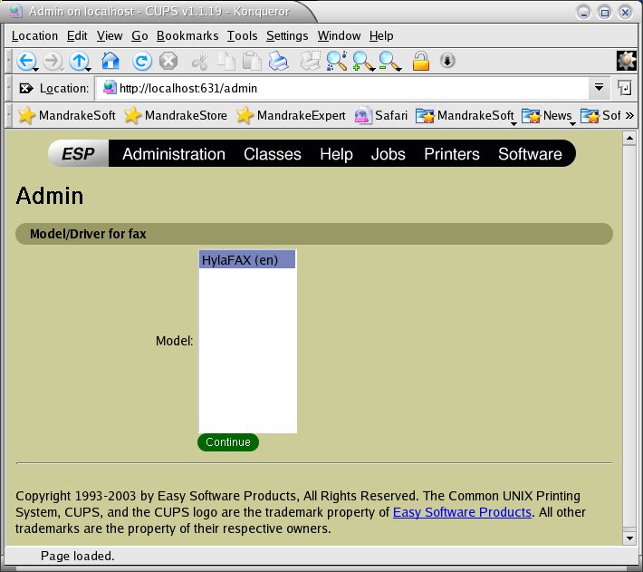

1. Introduction
Faxfrontend is a GUI interface to the HylaFAX (tm) client programs. It includes a modified version of Sebastiano Vigna's fax4CUPS to invoke it when a file is printed to a CUPS printer. With the fax4CUPS interface installed, the user prints to the fax printer, and the GUI front end is invoked to get the fax number, etc., from the user. The program can also be invoked in a standalone mode to queue a file for faxing.

A rolodex for commonly used fax numbers is provided, and a query to the HylaFAX server is displayed after the fax is queued for transmission.
When the files have been handed off to HylaFAX to send, the program displays the fax queue status by repeatedly executing 'faxstat', and capturing the output for display:
2. Requirements
Qt libraries, moc, and uic utilities
(http://www.trolltech.com)
'sudo'
- execute a command as another user
(http://www.sudo.ws/sudo/sudo.html)
CUPS
- Common Unix Printing System (http://www.cups.org)
export QTDIR=/usr/lib/qt3
The CUPS system must be able run the 'sudo' command in a backend script. The account that the CUPS daemon 'cupsd' runs with must be enabled to run 'sudo' command without passwords. The account used by CUPS to run external programs such as backend scripts is controlled by the 'User' directive in /etc/cups/cupsd.conf. For example, if the CUPS daemon uses the 'lp' account, there must be a line in /etc/sudoers to enable 'sudo' command usage:
Use the 'visudo' command to edit the '/etc/sudoers' file.
Restart the CUPS server, and define a fax printer for CUPS to use the hylafax.ppd and hylafax backend script. Use the CUPS WWW tool to create the printer (http://localhost:631). If the files have been correctly installed, the screens should look like the following screen shots:




4.
Standalone Usage
Invoke from the command line, either with or without a filename for faxing:
faxfrontend [file to fax]
If no file is given, the user has the option to send a cover page only, using the comments section for the fax content.
5. File Manifest
Executables:
CUPS configuration files:
Defaults file:
~/.faxfrontendrc
Rolodex file:
6. Troubleshooting
The CUPS error log (usually /var/log/cups/error_log) can contain useful information. Logging is controlled by the /etc/cupsd.conf file. The 'faxfrontend' program will log the faxcover and sendfax commands it generates to the system log (level daemon.info) when executed with the -d option. Change the line in /usr/lib/cups/backend/hylafax that executes the 'faxfrontend' program to
m=`sudo -H -u $USER $FAXGUI -d $FAXNAME`
to enable debug logging.
When the backend script '/usr/lib/cups/backend/hylafax' is executed at the command line with no arguments, it should report standard CUPS backend "discovery" information, and exit with status 0:
# /usr/lib/cups/backend/hylafax
direct hylafax:/local
"Unknown" "Local HylaFAX server"
7.
Acknowledgments
This is a Qt knock off of Andy Moskoff's 'tkhylafax' (ftp://ftp.hylafax.org/contrib/tkhylafax). I really wanted to use the fax4CUPS interface, but wasn't adept enough with Tcl/Tk to make modifications to 'tkhylafax' to accept a filename as an argument. Sebastiano Vigna did the original work for fax4CUPS (http://gongolo.usr.dsi.unimi.it/~vigna/fax4CUPS), which is really the best paradigm for sending a fax. Geoffrey Wossum supplied configuration tools for Qt with autoconf (http://sourceforge.net/projects/autoqt).
Glenn
Burkhardt
January, 2004
Westford, Massachusetts
gbburkhardt@verizon.net
ftp://ftp.hylafax.org/contrib/faxfrontend
{kind=link}